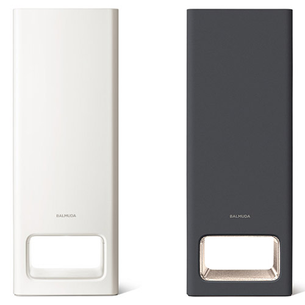
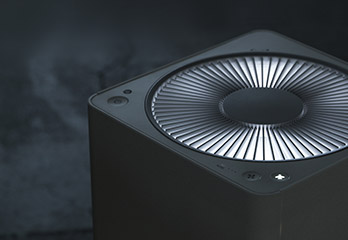
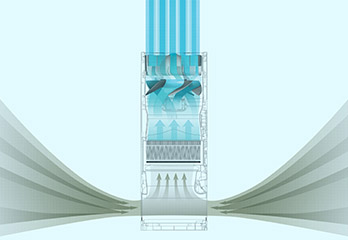
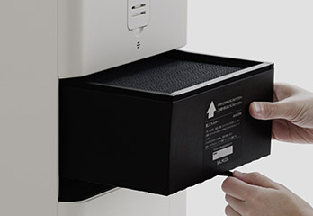
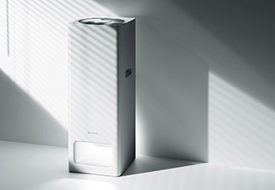
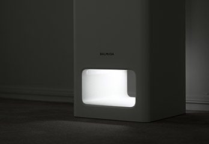
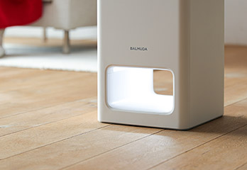

- 강력하게 빨아들이고, 강력하게 내뿜는
- '멀리 떨어진 곳의 공기까지 강력하게 끌어당겨 청정.
BALMUDA The Pure는 본체 아래의 흡입구에서 대량의 공기를 빨아들임과 동시에, 천장을 향해 청정된 공기를 강력하게 내뿜습니다.
- 발뮤다의 새로운 공기청정기
- 타워형 공기청정기
BALMUDA The Pure는 독자적인 팬구조로 대량의 공기를 천장까지 뿜어내어 순환기류를 형성합니다.
깨끗한 공기로 기분 좋은 공간을 선사합니다.
강력하게 뿜어져 나오는 청정 공기
-

공기를 깨끗하게 하는 빛의 기둥
흡입구와 송풍구에 빛이 들어오고,
이 빛의 기둥을 통과하는 동안 공기가 깨끗하게 청정됩니다.
본체의 디자인은 아주 심플하게, 어떤 공간에 놓아도
조화롭게 어울릴 수 있도록 디자인되었습니다.
-

공기의 흐름
공기를 내보내는 팬 위에 공기의 흐름을 고르게 하는
정류 날개가 장착되어있습니다. 기존 항공기의 제트 엔진 등에 사용되던 기술을
BALMUDA The Pure를 위해 공기/유체역학에 근거, 재설계하였습니다.
-

물세척이 가능한 간편 청소
BALMUDA The Pure는 간편하게 청소할 수 있습니다.
먼지가 쌓이기 쉬운 부품들은 분리하여 물로 세척하는 것이 가능합니다.
간편한 청소로 언제나 청결하게 관리할 수 있습니다.
-

깨끗한 존재감
심플하고 또 심플하게, 어떠한 공간에서도 조화로운 인테리어를 발현하는 깨끗한 존재감을 추구했습니다. 설치 면적은 A4 용지 한 장과 같은 크기로 다른 가구와
함께 할 때 공간의 활용도와 심플한 아름다움을 느낄 수 있습니다.
-

공기청정을 느낄 수 있는 빛
모든 불이 꺼진 한밤중 거실,
작동 중인 BALMUDA The Pure의 공기 통로가 은은하게 빛납니다.
이 빛을 보면 작동 중인 것을 확인하고 안심할 수 있습니다.
침실에서 사용 시 숙면을 위해 빛을 끄는 것도 가능합니다.
-

놓치지 않는 고성능 필터
불쾌한 냄새 성분은 물론 포름알데히드 같은 새집 증후군의 원인 물질까지 제거합니다.입자가 큰 먼지들을 1차로 걸러주고 항균작용을 통해 미생물의 번식을 억제합니다.